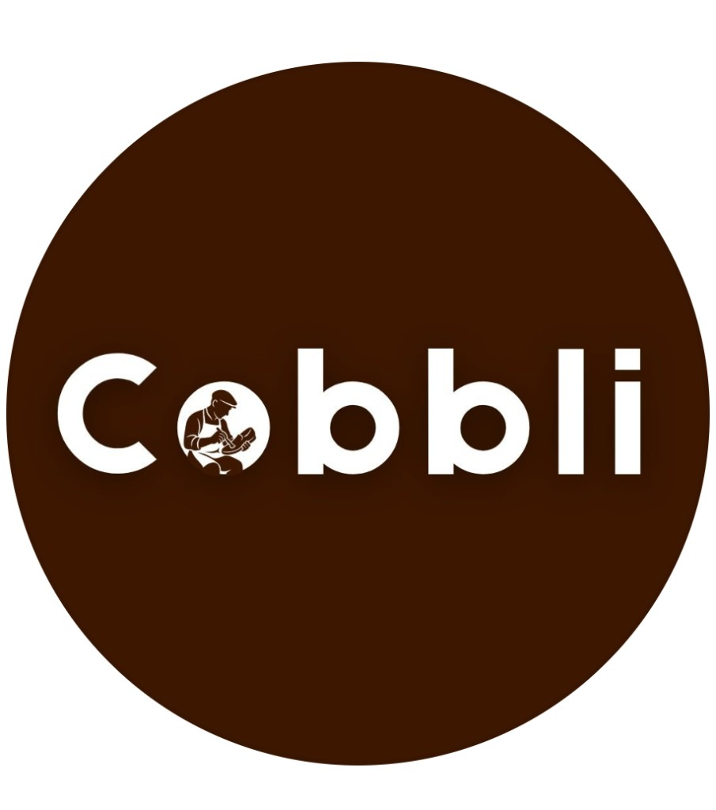
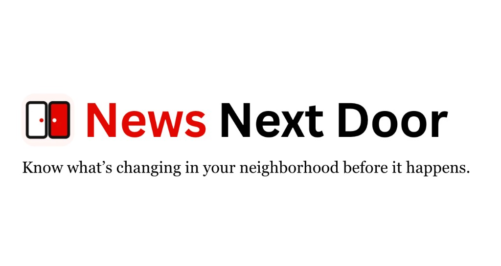
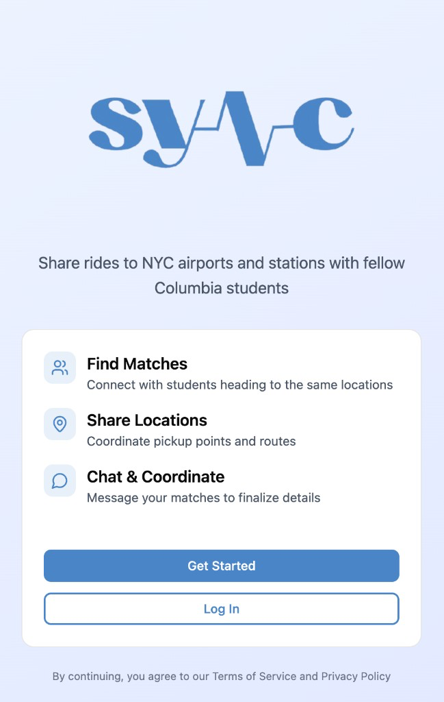
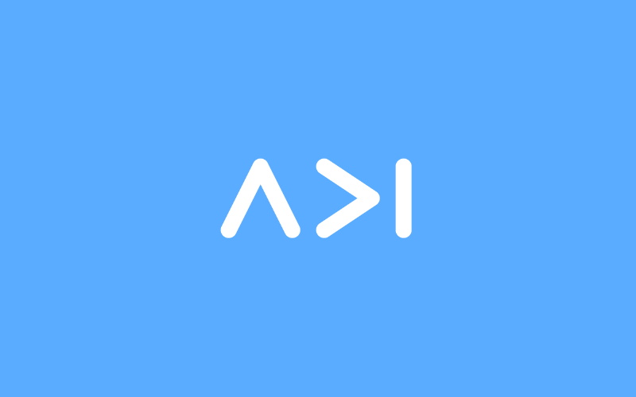
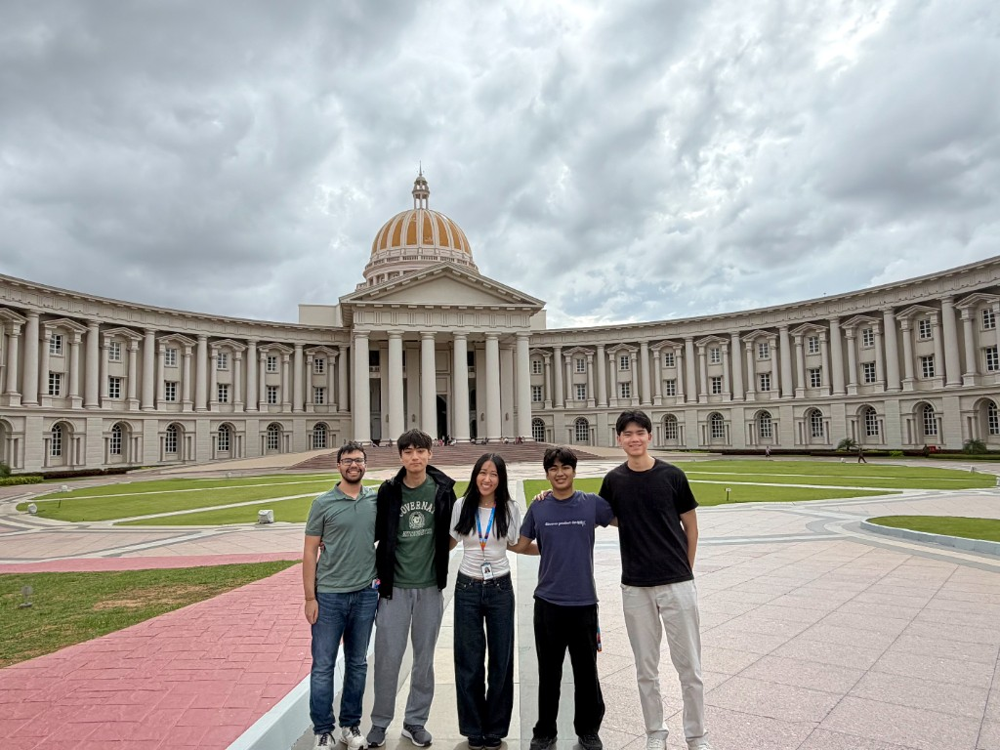
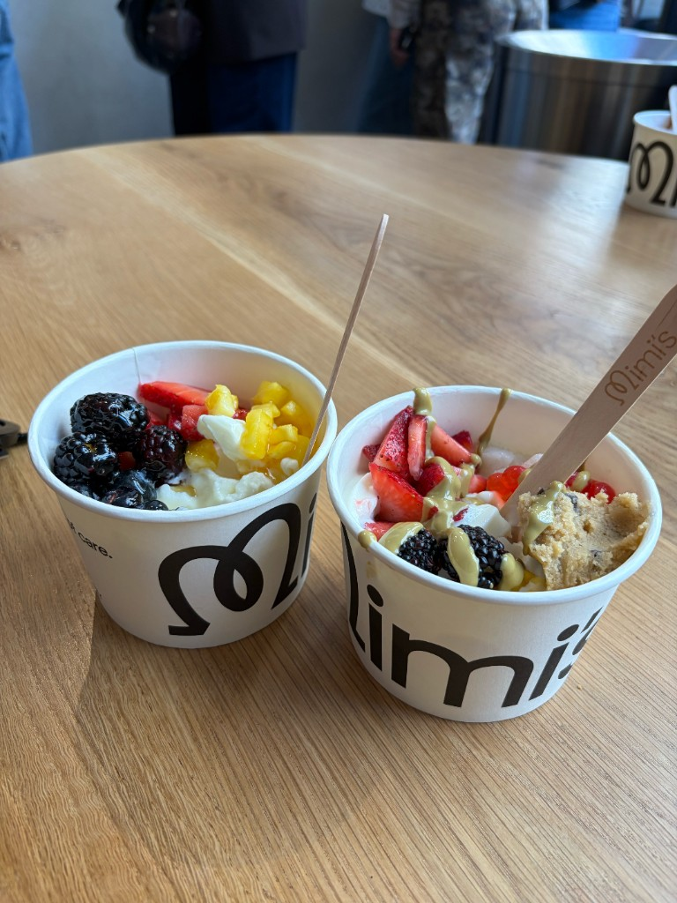
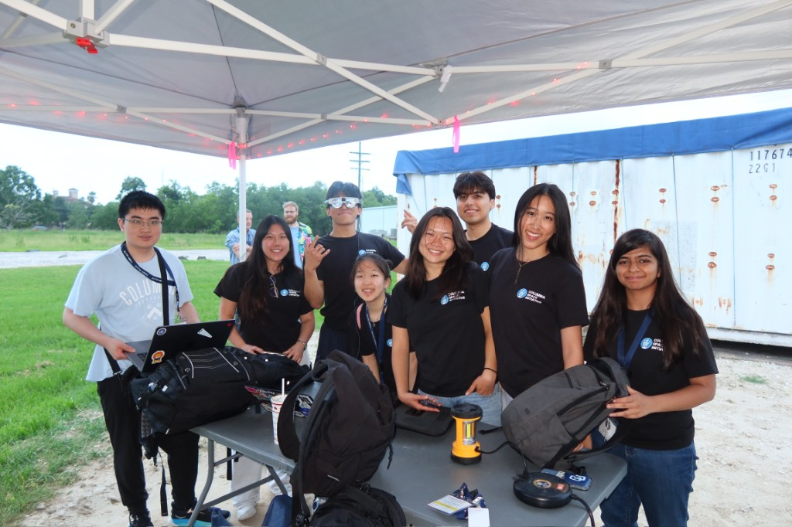

Sept 2026 – Present

Software Engineer Intern
Cobbli
New York, New York
Built a full-stack NYC repair platform for leather goods, with authentication, Stripe payments, and a FastAPI and Supabase backend.
Columbia University B.S. Computer Science
Full-Stack, Systems Programming, and AI/ML.


Hey, I'm Julia! I'm a computer science student at Columbia Engineering, passionate about building software for good. My interests span full-stack development, systems programming, and AI/ML, with a particular focus on applying software to physical systems, healthcare, and finance.
Outside of coding, I enjoy playing mahjong, swimming, pickleball, crocheting, and trying new eats around NYC!
Sept 2026 – Present

Cobbli
New York, New York
Built a full-stack NYC repair platform for leather goods, with authentication, Stripe payments, and a FastAPI and Supabase backend.
Jan 2026 – Present
Economic Complexity Lab
New York, New York
Built an automated Python pipeline to model UN Comtrade trade data and measure economic complexity across countries and industries.
June 2026 – Aug 2026
Infosys Limited
Bangalore, India
Developed a real-time trajectory predictor using a computer vision and VLM pipeline and engineered a monitoring dashboard for autonomous robots to navigate crowded environments.
June 2025 – Aug 2025
Cleveland Clinic
Cleveland, Ohio
Built an ETL pipeline that turns electronic health records into a database for sickle cell disease research.

News Next Door DivHacks 2026 Sponsor Winner GitHub A neighborhood paper that translates and simplifies local news and city updates into plain language you can read or hear. Sep 2026 Computer Vision and VLM for Autonomous Robot Public MVP GitHub Computer vision and VLM pipeline that enables robots to navigate crowded environments. June 2026 – Aug 2026 Inspectra Yale Hack 2026
GitHub
A multi-AI agent system that gives medical companies a smarter way to stay FDA compliant.
March 2026
Inspectra Yale Hack 2026
GitHub
A multi-AI agent system that gives medical companies a smarter way to stay FDA compliant.
March 2026

Sync Rideshare DevFest 2026 Sponsor Winner GitHub An AI-powered carpooling app that matches riders, lets them coordinate in chat, and split fares. Feb 2026
Internal/External Committee Site Application Development Initiative Creating communities and professional opportunities for Columbia CS students. January 2026 – Present Columbia Space Initiative Subteam Lead GitHub NASA Spacesuit User Interface Technologies Designing AR technologies for NASA Spacesuit User Interface Technologies (SUITS). October 2025 – Present

